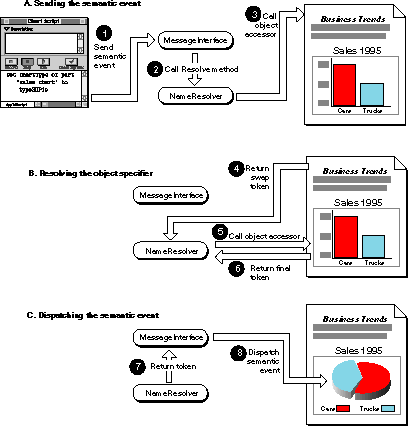

Implementing Your Semantic Interface
To make your parts scriptable, your part editor must implement a semantic interface that allows it to accept semantic events, handle them, and reply to them. Either on its own or with the help of the OpenDoc utility classes and default semantic interface, your part editor must
- implement its semantic interface, either as a subclass of
ODSemanticInterfaceor as a set of classes based on the utility classesODCPlusSemanticInterfaceandSIHelper- override its
AcquireExtensionandHasExtensionmethods to provide access to its semantic interface- provide semantic-event handlers for all Apple events appropriate to its content model
- provide object accessors for its content objects
- provide other kinds of handlers (such as object-callback functions and coercion handlers) as appropriate
- make public, through a terminology resource, the events it handles and content-object types it recognizes
Writing Semantic-Event Handlers
You need to create a handler for every semantic event that your part editor recognizes. Your list of semantic-event handlers defines the content operations that your parts engage in and allow users to access.How your semantic-event handlers manipulate the content of your parts is entirely up to you. This section discusses only the process by which your handler receives and handles a semantic event. Installing your handler is described in the section "Installation".
A typical source of semantic events is a script engine or another part. The script engine or part generates semantic events and sends them to your document's document shell. This is how your part ends up receiving and processing a semantic event:
- The identity of your part--the destination part--will generally have been encoded in the object specifier in the direct parameter of the Apple event. Your part can be at any level of embedding in the document, and the encoding can be either explicit or implicit. For example, your part may be the implicit target when the event explicitly requests a custom Info property of one of your embedded parts.
- The OpenDoc document shell receives the Apple event and passes it to the message interface object by calling the message interface's
ProcessSemanticEventmethod.- The message interface object calls the name resolver's
Resolvemethod for the event's direct parameter. Within theResolvemethod, the object-
resolution process may cycle several times (see "Resolving Object References"), until your part's semantic interface has been accessed and an object accessor of yours has returned a token that specifies an object contained within your part.- The message interface object calls the
CallEventHandlermethod of your semantic interface to dispatch the event to your semantic-event handler.
The actual implementation of your event handler could be within the
body of that method, but it is more likely delegated to another
class. In the default semantic interface, for example,ODCPlusSemanticInterface::CallEventHandlercallsSIHelper::CallEventHandler, which in turn examines the event class
and ID to determine which handler to dispatch to.- Your part may have an attached script for that semantic event. If so, you execute the script at this point. If not, or if the script does not handle the event, or if the script handler passes the event on after processing, you dispatch the event to the semantic-event handler.
- Your semantic-event handler, on receiving the event, decides whether and how to resolve additional parameters. There are three general possibilities:
- You read data from a location the parameter points to. This is nondestructive, and you can resolve the parameter and perform the task (possibly by sending the Get Data semantic event) even if it is from another part.
- You overwrite data or move data to a location the parameter points to. This is a destructive action and you should perform it only on your own part. If you are acting on a list of items, for example, be sure that every item in that list represents an object in your own part before overwriting or moving data to any of them.
- You ignore the parameter. If you choose to ignore a parameter, do not retrieve it from the event or attempt to resolve its object specifier.
- Your event handler carries out its operation, returning a reply Apple event if appropriate.
You fill out reply Apple events just as conventional applications do, as described in Inside Macintosh: Interapplication Communication. If the semantic event was sent by another part, the message interface object generates and keeps track of the return ID for the event so that your reply can be routed back to the sender's reply-event handler.
Writing Object Accessors
Object specifiers in an Apple event can refer to any content objects. If your part is to receive Apple events, it must provide accessor functions to allow those specifiers to be resolved. Your accessor functions return tokens (see "Returning Tokens"Resolve method and receive the tokens for other Apple event parameters that are object specifiers.If your scriptable part is also a container part, it must provide object accessor methods for objects that represent embedded parts, and it must be able to swap the context--that is, it must be able to hand off the object-resolution process to an embedded part (see "Returning a Swap Token"). OpenDoc includes default object accessors that provide the minimum capability for swapping context, but your part can replace or add to the capabilities of those accessors, if desired.
This section describes how your object accessor is called and which tokens it constructs and returns. The section also describes the default object accessors provided with OpenDoc so that semantic events can be sent to parts embedded within parts that do not themselves support scripting.
Object Resolution
OpenDoc resolves object specifiers for content objects within parts much as the Apple Event Manager resolves object specifiers in conventional applications. However, there are some differences, including these:OpenDoc takes the following steps to resolve a reference to a content object. The process starts when the document shell (in the case of semantic events from outside the document) receives a semantic event and calls the message interface's
- For semantic events sent from outside of a document, the document shell is the first handler of an object-specifier resolution. The shell does not handle events meant for any of the individual parts in the document, so in most cases it returns an error. To find the right part, OpenDoc then uses object accessor functions provided by the default semantic interface and by individual parts to obtain part-relative tokens (tokens for which the part is the context).
- OpenDoc reads parts into memory, if necessary, when interpreting object specifiers. For example, an embedded part referred to in a specifier may not be currently visible and thus not yet read into memory. To resolve the chain of objects further, OpenDoc may have to read in the part and then access an object within it.
- The callback flags used by the
Resolvemethod (equivalent to thecallbackFlagsparameter of the Apple Event ManagerAEResolvefunction) have a scope that is local to each part, rather than global to the object resolution process. Each part sets its callback flags by calling theSetOSLSupportFlagsmethod of its semantic interface.ProcessSemanticEventmethod, as described under steps 1 and 2 in "Writing Semantic-Event Handlers".A. Message Interface Calls Resolve
The message interface calls theResolvemethod of the name resolver (classODNameResolver), passing it the object specifier in the direct parameter of the Apple event (steps 1 and 2 of Figure 9-5).If the direct parameter does not exist, there may be a subject attribute in the event that takes the place of a direct parameter. A subject attribute is an object specifier that refers to the target part by its persistent object ID (see "Default Object Accessors"). All events sent through AppleScript include a subject attribute, and all events sent through the
Sendmethod of the message interface include a subject attribute (unless thetoFrameparameter ofSendis null). The presence of a subject attribute allows a scripting system to record an event's targets even if it has no direct parameter.If there is no direct parameter or subject attribute, or if the direct parameter is not an object specifier,
Resolveis not called and the event goes to the document shell (and then to the root part if the shell does not handle it).B. Resolve Locates the Proper Object
Not shown in Figure 9-5 is the fact that theResolvemethod first accesses the document shell's semantic interface and gives it a chance to resolve the object specifier. If, as is typical, the event is targeted to a part rather than to the document shell itself, the default semantic interface passes resolution to the root part. TheResolvemethod then takes the following steps, first with the root part and then with the appropriate embedded parts until the specifier is finally resolved.(Because Apple event objects exist in a hierarchy of containers, the
Resolvemethod may make several cycles through the following steps, encountering several context swaps, before identifying the specific object within a hierarchy.)
- Starting with the default container (this part's context), the
Resolvemethod calls theAcquireExtensionmethod of this part to get its semantic interface and thence the list of its object accessors. TheResolvemethod finds the accessor for the specified property or element and calls it (step 3 of Figure 9-5).- The object accessor returns a token to the
Resolvemethod, following the steps listed in the section "Returning Tokens".
- If the object is not an embedded part, the accessor puts into the token whatever information is needed to map the token to the right content object. Then it returns the token to the
Resolvemethod.- If the content object represents an embedded frame as a whole, the accessor creates and returns a token that specifies the embedded frame.
- OpenDoc provides a default accessor that performs this task if this part's object accessor does not, or if this part is not scriptable. See "Default Object Accessors".
- If the content object represents a directly accessible property of an embedded part--either a standard Info property such as the embedded part's modification date, or a custom property that this part may have defined, such as "is-selected"--the accessor creates and returns a token that specifies the requested property.
- OpenDoc provides a default accessor that performs this task (for the standard Info properties only) if this part's object accessor does not, or if this part is not scriptable. See "Default Object Accessors".
- If the content object represents an object within an embedded part, or a property of the embedded part that this part cannot access, the accessor returns a special token (see "Returning a Swap Token").
OpenDoc provides a default accessor that performs this swap if this part's object accessor does not, or if this part is not scriptable. See "Default Object Accessors".
- The
Resolvemethod finds the object accessor for the next property or element in the hierarchy of the object specifier and passes the returned token as the container to that accessor. That accessor, in turn, returns another token. This cycle continues, with context swaps occurring when appropriate, until the innermost element of the object specifier has been converted to a token and passed back toResolve(steps 5 and 6 of Figure 9-5).C. OpenDoc Calls the Correct Event Handler
After resolving the object specifier,Resolvereturns the final token to the message interface object (step 7 of Figure 9-5). OpenDoc then passes that final token to the proper part's semantic-event handler, as the direct parameter of the Apple event (step 8 of Figure 9-5).(If the Apple event has a subject attribute but no direct parameter, OpenDoc calls the proper part's semantic-event handler but discards the token.)
Figure 9-5 Resolving an object specifier involving an embedded part

Returning Tokens
In the OpenDoc version of Apple events, a token is a special descriptor structure, implemented as an OpenDoc object of typeODOSLToken, that a part uses to identify one or more content objects within itself. Your object accessor functions return tokens when they successfully resolve object specifiers. The structure of a token is not public, but it contains an OpenDoc object (of typeODDesc) that parts can access in order to extract or insert Apple event descriptor data.OpenDoc hides the structure of the
ODOSLTokenobject; you cannot manipulate its fields directly. This privacy allows OpenDoc to store extra information that it needs inside a token; it also ensures that OpenDoc's scripting support will be compatible with future distributed-object models.When your object accessor needs to return a token, it modifies the
ODOSLTokenobject that was passed to it by modifying theODDescdescriptor object it contains. Your accessor can perform this task with a utility function or with methods ofODDescitself.The ODDesUtl utility library also provides the function
- The accessor calls the
GetUserTokenmethod of the name resolver to access the OpenDoc descriptor object (of typeODDesc) contained within the token that was passed to the accessor.- The accessor can optionally create a descriptor of type
AEDescand set itsdescriptorTypeanddataHandlefields to store the information needed.- The accessor assigns the data to the descriptor object:
- If it has created an Apple events (
AEDesc) descriptor, the accessor can assign theAEDescdescriptor to theODDescobject by using the utility functionAEDescToODDesc(from the ODDesUtl utility library provided with OpenDoc). The accessor then disposes of theAEDesc.- If it has not explicitly created an Apple events descriptor, the accessor can assign the descriptor data to the descriptor object directly by calling its
SetRawDataandSetDescTypemethods.ODDescToAEDesc, which allows you to extract (for inspection or modification) theAEDescdescriptor structure from anODDescobject. The classODDescitself includes the methodsGetRawDataandGetDescType, which allow you to extract the descriptor data.Your object accessors can verify the tokens passed to them by calling the name resolver's
IsODTokenmethod. The name resolver also provides theGetContextFromTokenmethod, which allows your accessor to determine, for example, which display frame of its part contains the target of the event.Returning a Swap Token
Sometimes your object accessor function is asked to access a content object (or a property that your part cannot directly access) from an object whose class iscPart--meaning that the requested item is something within a frame embedded in your part. In this case, the accessor must pass back a special token, called a swap token, to inform the name resolver of its inability to furnish the required token. Your accessor creates this token by calling theCreateSwapTokenmethod of the name resolver to initialize the swap token, passing it a pointer to the embedded frame and a pointer to the part in the embedded frame. Your accessor then should simply return a value ofnoErr, taking no further action.Upon receipt of the swap token, the name resolver changes the current context from your part to the embedded part and once more tries to access the object in that context.
If your part is a container part and is scriptable, it must support such context switches with swap tokens, either through its own object accessors or by letting a default accessor (see "Default Object Accessors") perform the swap.
- Note
- OpenDoc reserves the descriptor types
'swap','part', and'tokn'for its own use. Do not use these values in thedescriptorTypefield of your own tokens.
Other Considerations
When you write an object accessor, note that, in interpreting object specifiers, "part X of doc Y" implies "part X of <current draft> of doc Y".Your part can provide object accessors for document-wide user-interface elements, to be used when it is the root part of a document. For example, as root part it can provide accessors for window scroll bars or for document characteristics such as page size.
If your object accessor needs to know the frame through which your part was accessed--the frame that displays the part that is the current context--it can call the
GetContextFromTokenmethod of the name resolver. The value returned represents the most recent frame passed toCreateSwapToken.Writing Other Kinds of Handlers
In addition to semantic-event handlers and object accessors, you can write other special-purpose functions and install them for use in interpreting semantic events. This section discusses OpenDoc issues related to object-
callback functions, coercion handlers, and other kinds of handlers.Object-Callback Functions
Your part can provide object-callback functions for theResolvemethod to call when your part needs to provide extra information before object resolution can occur. You can use these functions, also called special handlers, for a variety of purposes:All callback functions in OpenDoc function exactly as they do with conventional applications, except for these minor changes:
- You can provide an object-counting function (CountProc) so that, when the object specifier involves a test,
Resolvecan determine how many elements it must examine in performing the test. You must provide this function if you want the Apple Event Manager to perform whose tests, that is, to resolve object specifier records of key formformTestwithout your part itself having to parse the whose clause and perform the counting test.- You can provide an object-comparison function (CompareProc), which determines whether one element or descriptor structure is equal to another. You must provide this function if you want the Apple Event Manager to perform whose tests without your part itself having to parse the whose clause and perform the comparison.
- You can provide a token-disposal function (DisposeTokenProc)--which overrides the Apple Event Manager's
AEDisposeDescfunction--in case you need to do any extra processing when your tokens are disposed of.- You can provide an error-callback function (GetErrDescProc), which provides a descriptor into which the Apple Event Manager can write information about resolution failures.
- You can provide three kinds of marking-callback functions, which allow your part to use its own marking scheme to identify sets of objects.
- A marking function (MarkProc) marks a set of objects.
- An unmarking function (AdjustMarksProc) removes marks from previously marked object sets.
- A marker-token function (GetMarkTokenProc) returns a token that can be used to mark a set of objects.
You install object callbacks as described in the section "Installing Handlers, Accessors, and Callbacks".
- Each has an additional parameter, of type
ODPart, to allow access to your part object from the callback function.- Some parameters have different types from their conventional equivalents. For example, parameters of type
AEDescin conventional callbacks are of typeODDescorODOSLTokenin OpenDoc callbacks.- OpenDoc callback functions return an error type of
ODErrinstead of theOSErrtype returned by callback functions in conventional applications.Object-callback functions (and whose tests) are described in more detail in the chapter "Resolving and Creating Object Specifier Records" in Inside Macintosh: Interapplication Communication.
Coercion Handlers
Coercion handlers are functions that convert data of one descriptor type into data of another descriptor type. Coercion handlers are common in Apple events. Some are provided by the Apple Event Manager; others may be provided by your part editor. Any coercion handlers installed by your part editor are called only when your part is the context for the Apple event. Normally, the document shell is the context, but there are two situations in which your part can become the context:Coercion handlers are not chained by OpenDoc. That is, an embedded part does not inherit the coercion handlers of its containing part, and a root part does not inherit the coercion handlers of the shell.
- when an object accessor installed by your part must be called during the resolution of an object specifier
- when your part's semantic-event handler is called
Coercion handlers are described in more detail in the chapter "Responding to Apple Events" in Inside Macintosh: Interapplication Communication.
Predispatch Handlers and Recording
A predispatch handler is a function that it is called whenever your document receives any Apple event, before any part's handler for that Apple event is called. OpenDoc allows you to install predispatch handlers and to specify whether or not you are currently using a given predispatch handler.For example, if your part is recordable, you can install a predispatch handler to intercept the Start Recording and Stop Recording Apple events that are sent to the document shell. (OpenDoc does not automatically forward those events to each part in a document.) Even so, your part may be read into memory and initialized after the user has turned recording on, in which case your predispatch handler won't receive the Start Recording Apple event. Therefore, when your part initializes itself, it should also check with the Apple Event Manager to see if recording is on. If so, it can record its actions.
Predispatch handlers are described in more detail along with the
keyPreDispatchconstant in the chapters "Responding to Apple Events" and "Creating and Sending Apple Events" of Inside Macintosh: Interapplication Communication.Installation
Once you have implemented your semantic interface, you need to install its components as described in this section.Making Your Semantic-Interface Extension Available
Your semantic interface is an extension class plus related classes. You can either provide your own subclass ofODSemanticInterface, or you can implement bothODCPlusSemanticInterfaceandSIHelper. Either way, you must override the (inherited) part methodsHasExtensionandAcquireExtensionso that they return the semantic interface object. TheODTypeconstant that names the semantic-interface extension iskODExtSemanticInterface; the constant is passed by callers of yourHasExtensionandAcquireExtensionmethods.In implementing and interacting with your semantic-interface extensions, follow the rules for using OpenDoc extensions, as described in "The OpenDoc Extension Interface".
Installing Handlers, Accessors, and Callbacks
Your part editor's semantic interface is mainly a table of handlers that OpenDoc uses when processing a semantic event. If you use the OpenDoc scripting-related utility classes, you call methods ofSIHelperto install and remove event handlers, object accessors, and other special callback functions; you use methods ofODCPlusSemanticInterfaceto call them.Other methods of
- You install semantic-event handlers by calling the
InstallEventHandlermethod ofSIHelper.- You install object accessors by calling the
InstallObjectAccessormethod
ofSIHelper.- You install coercion handlers by calling the
InstallCoercionHandlermethod ofSIHelper.- You install object callback functions in either of two ways. You can call
theInstallSpecialHandlermethod ofSIHelperand pass it a parameter specifying the kind of function to install, or you can call function-specific methods such asInstallCountProcandInstallMarkProc. Constants for the parameter you pass toInstallSpecialHandlerare defined by the Apple Event Manager and have names such askeyAECompareProc.- You install a predispatch handler either by calling the
InstallSpecialHandlermethod ofSIHelper, passing it a parameter
whose value iskeyPreDispatch, or by calling theUsingPreDispatchProcmethod of your subclass ofODSemanticInterface.SIHelperallow access to and removal of these handlers, accessors, and callbacks.You use the
SetOSLSupportFlagsmethod of your subclass ofODSemanticInterfaceto set flags that, during the resolution process, notify the name resolver'sResolvemethod of the kinds of object-callback support that your part editor can provide for resolution of object specifiers.Installing System-Level Handlers
To install system-level semantic-event handlers, coercion handlers, object accessors, and object-callback functions, you can use the standard Apple Event Manager installation functions and set theisSysHandlerparameter toTRUE.In general, installing system-level handlers is discouraged because of the difficulty of ensuring your part's availability to handle calls to them. If you do install them, be sure that you don't leave them installed after your part has closed. You should remove any installed system-level handlers in your part's
ReleaseAllmethod or possibly in your part'sReleasemethod when the reference count goes to 0.Making Your Terminology Resource Available
When a scripting system first compiles a script that targets an OpenDoc document, it needs access to the terminology ('aete') resources associated with that document. The scripting system gains this access by sending a Get AETE Apple event to OpenDoc, which converts it to an OpenDoc Get AETE Apple event (class IDkAEOpenDocSuite, event IDkGetAETE) and sends it to the document shell.The document shell handles the OpenDoc Get AETE Apple event by returning the terminology resource in its reply event's result parameter. (If you create a container application, it must handle the OpenDoc Get AETE event if it is to be scriptable.)
Your part editor should include a terminology resource in its shared library. OpenDoc caches this resource, along with the terminology resources of all other installed part editors on the user's system, for use by the scripting system. Because the scripting system merges all terminology resources into a single composite resource for all parts and all documents, it is extremely important that your part editor avoid terminology conflicts with other part editors. As a minimum, be sure to avoid conflicts with any terminologies defined in the current suites of Apple events.
Also, because the only available terminologies are those in the system-wide merged
'aete'resource, your part editor cannot make its terminologies known dynamically; it cannot itself handle the Get AETE event, and it cannot make use of a scripting-size ('scsz') resource.